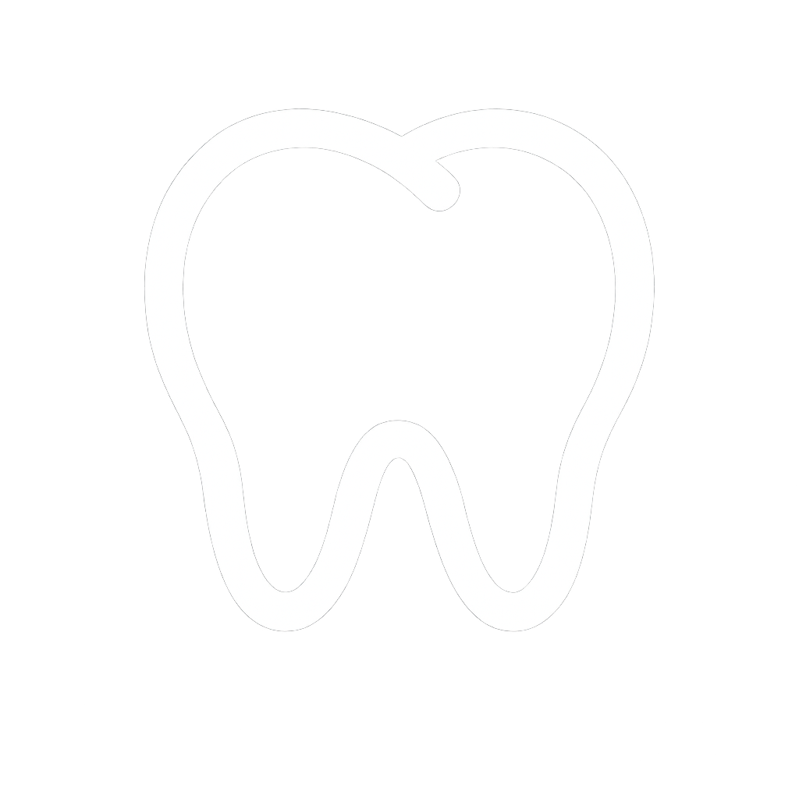
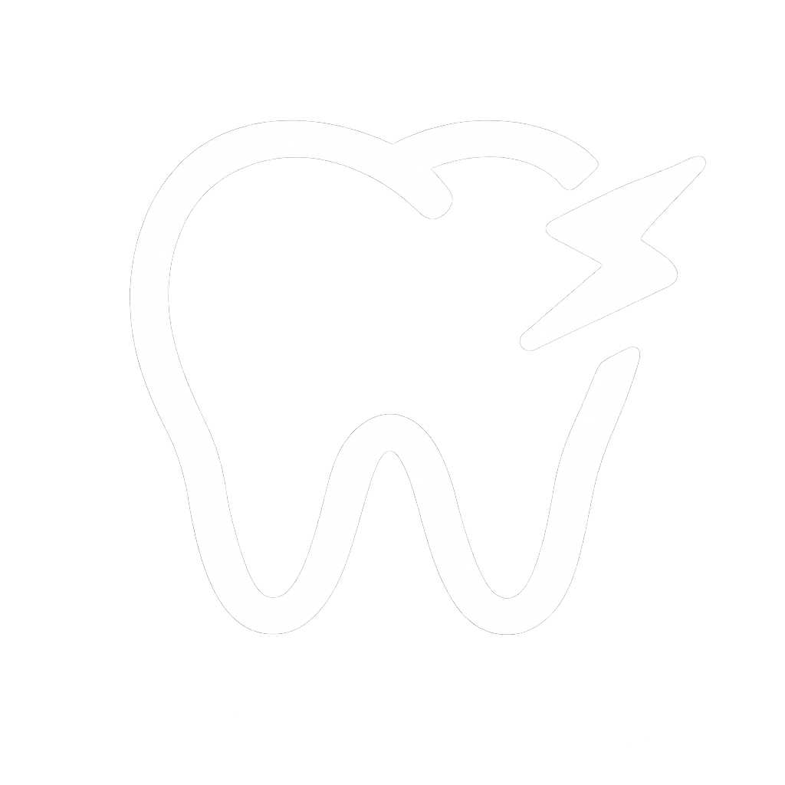
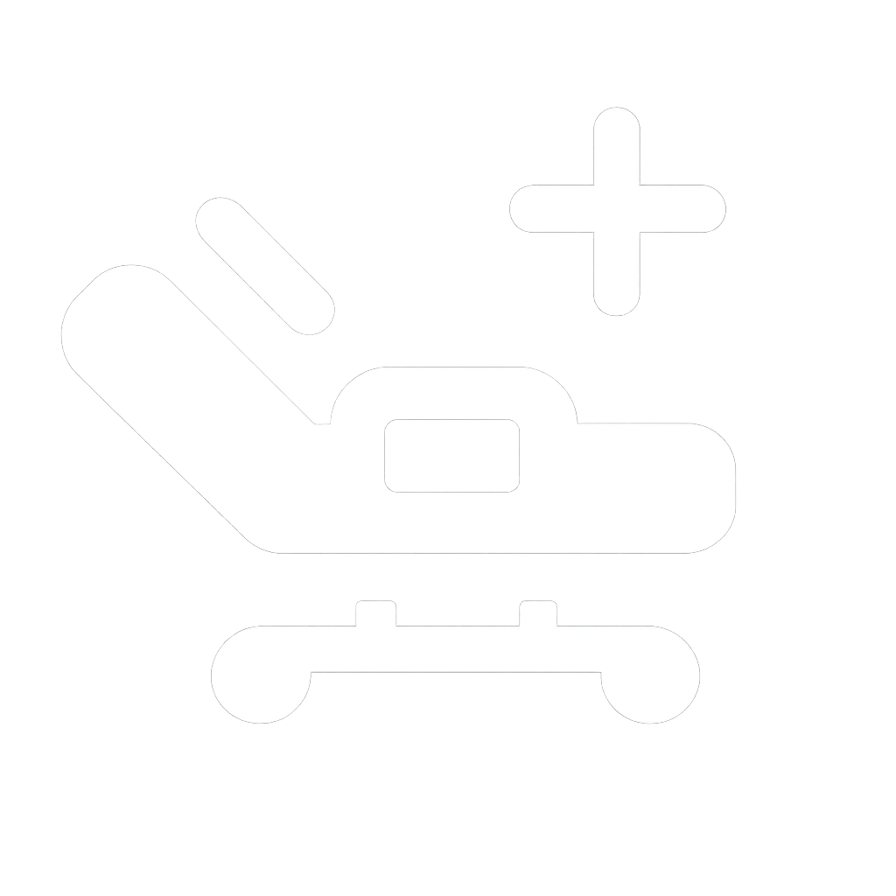

Implante dentário e reabilitação de pacientes que sofreram perda de dentes
Prótese dentária
Substituição de dentes perdidos, podendo ser removíveis (encaixadas) ou fixas (implantadas).
Coroas e facetas em cerâmica
Protocolo sobre implante de resina e cerâmica
Próteses removeis total ou parcial
Coroas e facetas em cerâmica
Protocolo sobre implante de resina e cerâmica
Próteses removeis total ou parcial
Disfunção Temporomandibular (DTM)
Tratamento com Placa Mio Relaxante (bruxismo) para solucionar problemas ou alterações nas articulações que ligam o maxilar á mandíbula, ocasionando dores e dificuldade de mover a boca

Endodontia
Tratamento de canal: remoção da polpa dentária e obturação do canal radicular
Harmonização Orofacial
Equilíbrio entre a relação estética e funcional do rosto e sorriso do paciente através do botox e preenchimento

Dentística
Trata não apenas da saúde bucal do paciente, como também os fatores estéticos com restaurações e faceta em resina composta

Siso
Extração de sisos

Enxerto
Enxerto gengival